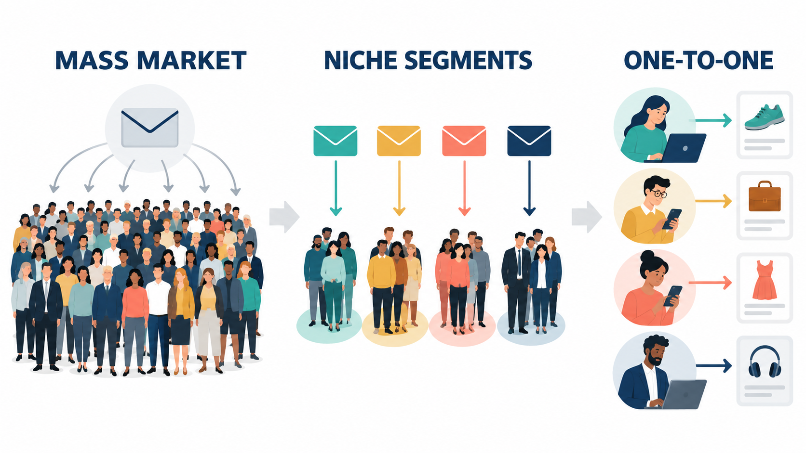
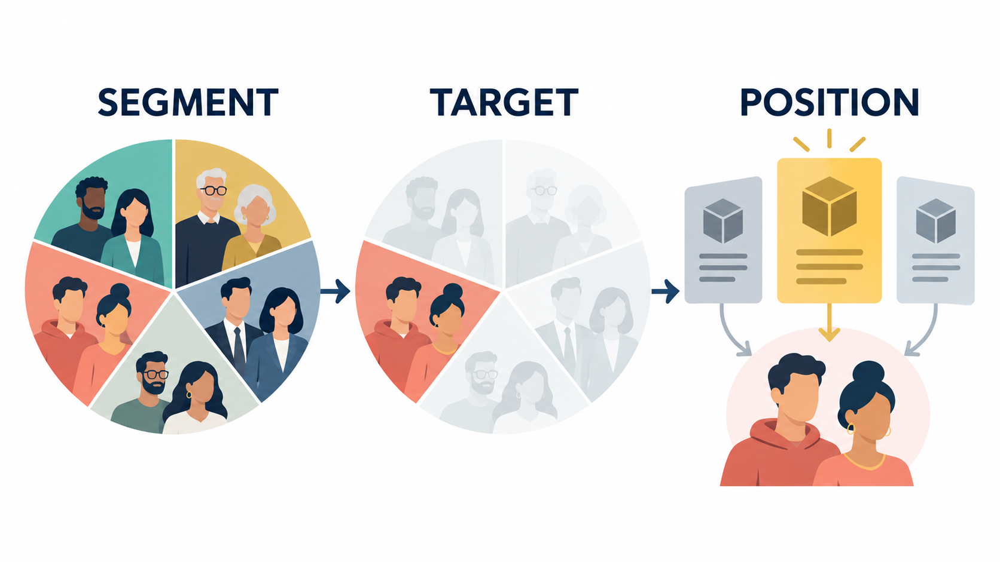
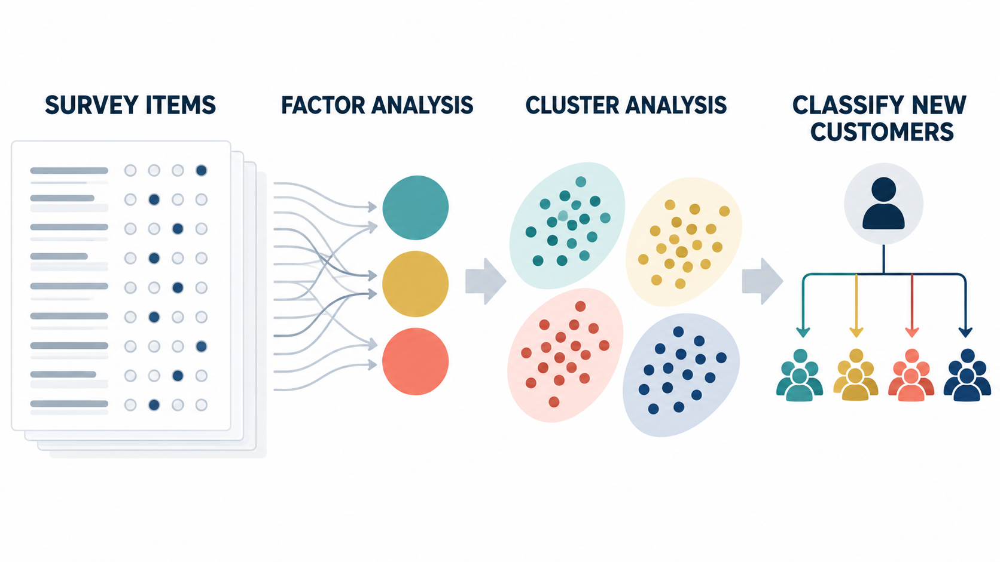

Marketing Management · Week 2
Marketing Principle #1: All customers differ
Yixing Chen
Customer heterogeneity is variation in needs, preferences, constraints, behavior, and response to marketing activity.
A customer difference matters when it changes what the firm should do.
Broad coverage created scale. Focused competitors created a better fit.
The lesson concerns customer selection and operating design, not simply the decline of one retailer.
Write down your favorite retailer and the two most important reasons you prefer it.
Resources, abilities, personality, tastes, and tolerance for risk.
Past choices and events shape expectations, habits, and reference points.
Customers use the same category to solve different practical problems.
Choices can express status, values, belonging, or a desired self-image.
These sources interact. A useful segment reflects a pattern of needs, not one isolated descriptor.
Managers must decide which differences to recognize, which groups to serve, and which trade-offs to accept.
Potential differences in customer desires can exist before they appear in purchase data.
Do not infer “no demand” from “no purchase.” Interviews, observation, experiments, and concept tests can expose preferences that transaction data cannot show.
Some customers wanted hearing support that felt accessible, discreet, and integrated into a device they already used.
The example shows how regulatory and technological changes can reveal a previously constrained segment.
Source: U.S. Food and Drug Administration, 12 September 2024.

The direction is toward smaller units of analysis. The governing trade-off remains customer fit versus the cost and complexity of variation.
Traditional segmentation groups customers with similar needs. Spotify can update its view of one listener after every stream, skip, save, and search.
Data makes the unit smaller. It does not remove the need for a clear customer benefit.

Segment the market by needs. Target groups where the firm can create and capture value. Position the offer around a credible relative advantage.
UrbanCart asks 12 overlapping questions about convenience, product quality, value, and innovation.
Several questions measure the same underlying customer need.
Four customer-level scores: convenience, quality, value, and innovation orientation.
Each UrbanCart customer now has four factor scores that summarize the pattern of needs.
The scores must be on comparable scales before distance is calculated.
Four candidate groups with different need profiles, sizes, economics, and channel behavior.
The research sample has segment membership plus observable characteristics such as age, income, spend, digital share, and discount usage.
A practical assignment rule and evidence about which descriptors distinguish each segment.

Targeting selects the segment or segments where the firm should concentrate its resources.
A large segment is not automatically attractive. An attractive segment is not automatically a good fit for the firm.
Illustrative UrbanCart data.
Positioning defines the relative advantage the firm wants target customers to associate with its offer.
Illustrative positions and brand names.
Which customer group should the firm serve? Define the group precisely enough to guide decisions.
Which need or benefit should the offer fulfill? Focus on the benefit that changes customer choice.
Why is this offer a better option than relevant competitors or substitutes? Provide credible support.
For [target customer], [offer] provides [priority benefit] because [evidence of relative advantage].
For time-pressed urban professionals, UrbanCart provides dependable weekly shopping with the least planning effort because its integrated inventory, scheduled delivery, and one-tap repeat ordering reduce uncertainty at every step.
Customer centricity places customer needs at the center of organizational decisions and uses continuing evidence to update those decisions.
Customer priorities shape the mission, investment choices, unit structure, and resource allocation.
Frontline observation, research, customer councils, and shared data connect customer needs to decisions.
Customer outcomes such as satisfaction, retention, share of wallet, and complaint resolution complement financial metrics.
If two functions disagree, can they use the same customer evidence and target-segment priorities to resolve the trade-off?
The reported payoff emerged after roughly 9 to 10 quarters on average. Reorganization should therefore be evaluated as a transition, not a one-period event.
Further reading: Lee, Sridhar, Henderson, and Palmatier (2015), Marketing ScienceCustomers: needs, descriptors, size, growth, and perceptions.
Company and competitors: strengths, weaknesses, opportunities, and threats.
STP, customer centricity, perceptual maps, factor analysis, clustering, classification, and the GE matrix.
Industry segments, target segments, and a positioning statement specifying who, what, and why.
The framework organizes evidence around a decision sequence. Each output becomes an input to later marketing choices.
Needs, desired benefits, constraints, descriptors, behavior, segment size, growth, and perceptions of available offers.
Capabilities, resources, brand meaning, channels, cost structure, partnerships, and implementation constraints.
Target segments, offers, strengths, weaknesses, likely responses, and underserved customer needs.
Customer data defines the opportunity. Company and competitor evidence determines whether the firm can capture it.
Named groups, distinctive needs, useful descriptors, estimated size, and opportunity.
The selected group, its economics, identification rule, priority needs, and fit with the firm.
A concise direction for who the offer serves, what benefit it delivers, and why the difference is credible.
UrbanCart identifies Convenience First, Quality Loyalists, Value Hunters, and Innovation Explorers.
Quality Loyalists combine high value, strong fit, and credible service advantages. Convenience First offers a second growth path.
UrbanCart promises dependable quality with informed service and easy issue resolution.
Merchandising, service, loyalty benefits, and metrics align around the priority group.
For customers who value dependable quality and expert help, UrbanCart provides a trustworthy shopping experience because its curated assortment and responsive service reduce the risk of a poor purchase.
Adapted from Palmatier and Sridhar, Marketing Strategy: Based on First Principles and Data Analytics, Chapter 2.